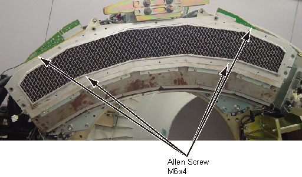

Operating Documentation
Direction 5181178-800, Rev# 16
BrightSpeed Select Service Methods Gen
Module Version 1.0, Version Date 6/3/10
Operating Documentation |
| Required Persons | Preliminary Reqs | Procedure | Finalization |
|---|---|---|---|
| 1 | Not Applicable |
| Item | Qty | Effectivity | Part# | Manufacturer | |
|---|---|---|---|---|---|
| Standard FE Tool Kit | 1 | - | - | - | |
| Item | Qty | Effectivity | Part# | Manufacturer | |
|---|---|---|---|---|---|
| PK ADB Mid Plenum Filter | 1 | - | 5488042 | - | |
| ||||
| Follow ALL required safety and PPE procedures customary for your organization when working on this product. | ||||
| Condition | Reference | Effectivity |
|---|---|---|
Only trained service personnel should service the GE CT Scanner. | - | - |
Position the Table to its lowest position.
Remove the Gantry right side cover.
| ||||
| Always turn OFF the HVDC before the 120 VAC. Turning OFF 120 VAC power before HVDC power can result in equipment damage. | ||||
Turn OFF Axial Enable, HVDC, and 120VAC switches on the Service Switch panel.
Remove the gantry left side, top and front covers.
Position the PDAS at the 12 o'clock position
Lock the Gantry in position, using the rotational lock.
Disconnect the fan power cable from the PDAS Duck Fan Cover.
Remove the PDAS Duck Fan Cover by unscrewing its M6x12 allen
screws by a  on the PDAS Duck Fan Cover.
on the PDAS Duck Fan Cover.
Illustration 1: Remove the PDAS Duck Fan ASM

Remove the PDAS ADB Mid Plenum Filter by unscrewing its M6x4 allen screws.
Illustration 2: Remove PK ADB Mid Plenum Filter

Install the new PDAS ADB Mid Plenum Filter by screwing its 6 allen screws. (Torque: 7.9 N.m)
Reinstall the PDAS Duck Fan Cover by screwing its 12 allen screws. (Torque: 7.9 N.m)
Reconnect the fan power cable to the PDAS Duck Fan Cover.
Disengage the rotational lock.
Turn ON Axial Enable, HVDC, and 120VAC switches on the Service Switch panel.
Ensure fans work properly.
Reassemble the Gantry covers.